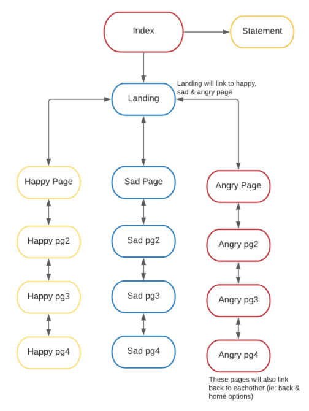

1. A TITLE FOR YOUR A2: World of Emotions
2. LIST OF CHOICES FROM COLUMNS A-D:
Column A - The What: To create an immersive experience for the user, we will combine playful and artistic elements alongside some gamification to build our ‘world of emotions’.
Column B - Subject/Theme Starting Point: Our website is purely for recreational purposes, rather than educational which playfully helps them reflect on their feelings (i). It also revolves around an imaginative world of emotions created by us for the user to explore and be amused by (ii). Lastly, the user will engage in a series of activities and mini-games through our web-art piece (iii).
Column C - Informing Theory/Logics: The quote “play as a way of expression, a way of engaging with the world” (Sicart 3-4) inspired our idea for A2. Our web-art piece will create a world for the user to engage and express themselves through. It also revolves around the concept of human emotion which is a crucial way humans express themselves. As sicart mentions, “playfulness is a physical, psychological, and emotional attitude toward things, people, and situations.” (Sicart, 17-18), our piece aims to evoke an emotional and psychological response from the user through playful activities and also making the user introspect on the choices they made.
Column D - Page-Oriented OR JavaScript-Oriented option (minimum reqs.): Our A2 will revolve around a page oriented approach since our main focus will be playful, art-based interaction and our secondary elements will be Javascript, game based activities but with a more abstract feeling of playing each activity.
3. CONCEPTS AND INTENTIONS:
Our A2 was created to represent three main emotions people feel which are happy, sad, and angry through activities that allow the user to experience each emotion. Since we decided to build our A2 with a more page-oriented design, we wanted to make the interactions more abstract, adding to the fact that emotions cannot be described and are abstract in their own way. It combines the idea of a web-based art piece and a bit of gamification. Our pages are designed to help the user feel certain emotions depending on what emotion they chose on the landing page (landing.html). Our website consists of activities that portray a certain emotion with the help of coloured graphics and sounds.
The illustrations contain certain colours that represent a mood, for example, yellow and other bright colours would represent happy, red and bold colours for angry, and blue and dark colours for sadness. Similarly, our sounds were created with certain tones that will give a certain feeling depending on the mood. Cheerful music was created for ‘happy’ activities, slow music was created for the ‘sad’ activities, and bold and aggressive music was meant for ‘angry’ activities. Through the sounds and illustrations the user would experience each mood.
Our activities were inspired by tangible and intangible things that take part in the development of an emotion. Tangible pieces we decided to include for the happy pages were a gumball machine, balloons, and a beautiful scenery. These things bring joy to people of all ages. A gumball machine would excite children but as well as older people, balloons are used to celebrate and bring happiness as well, and the scenery with the rainbow would uplift the mood, therefore developing happiness in the user. Intangible items we created were abstract shapes and concepts that represent a mood. For the sad pages, we used abstract shapes for the user to interact with and a concept of an inescapable void to show how sadness feels visually. Lastly, for the angry pages, we incorporated a spinner so that the user can experience mindfulness and know the levels of anger, also in an intangible sense, we included interactive activities for the user to understand what anger is.
Some of the guiding questions that we all used is how can we help the user understand and unfold the emotions through interacting with a web based art piece? Simultaneously, how can we make unique interesting interactions that make the users feel a certain emotion? How can we use colours and sounds to deepen the emotion the users are experiencing? There is an interdependency on our interactions designed and the current users state or feeling.
Together the colours, sounds, design and interactions used builds up our interactive web based gamified work. Overall, the user should be able to identify the emotion they are feeling after finishing all activities in each emotion category.
4. ALL FILENAMES OF WEBPAGES WITH JAVASCRIPT REQUIREMENTS:
Sad 2: Alert and Keypresses
Sad 3: Random Images
Sad 4: Mouse-event interaction (rollover)
Happy 1: Random images and Div interactions (hide/make visible)
Happy 2: Alert and Mouse-event interactions (onmousemove)
Happy 3: Div interactions (hide/make visible)
Happy 4: Div interactions (hide/make visible)
Anger 1: Image Rollovers
Anger 2: Time interval function Spin Wheel
Anger 3: Random Images
Anger 4: JS Timeout
4a) Pages that add to total count of pages using JavaScript:
Sad 2: Alert
Happy 2: Alert and using onmousemove
4b) Filenames using different A2 JavaScript Catagories:
Keypresses: the following pages used keypresses:
sad2.html
Random images: the following pages used random images:
happy1.html sad3.html angry3.html
Unconventional Mouse-event interactions and/or 3+ Mouse-events in a rollover: the following pages used mouse-event interactions:
happy2.html sad4.html angry1.html Div interactions: the following pages used div interactions:
happy1.html happy3.html happy4.html
Set timeout function: the following pages used div interactions:
angry2.html angry4.html
5. OUR WEBSITE SITEMAP:

6. JAVASCRIPT CREDITS:
The following pages implemented some JavaScript from outside sources:
happy2.html: → https://www.youtube.com/watch?v=TpwpAYi-p2w
happy3.html, happy4.html, happy1.html: → https://www.daniweb.com/programming/web-development/threads/191530/make-div-appear-when-you-click-a-link AND https://teamtutorials.com/web-development-tutorials/hide-and-show-a-div-using-javascript"
anger4.html → https://www.youtube.com/watch?v=MMNEEdGa5eE
anger2.html → https://www.youtube.com/watch?v=Gcz5RM-imJ8&list=RDCMUCWCcoBXOXpNMg0p8Qrn2l0g&index=1
sad1.html → https://medium.com/@dailyfire/cursor-trails-3-simple-css-tricks-to-add-to-any-website-part-1-64750798583c
landing.html → https://codepen.io/P1N2O/pen/pyBNzX
The rest of our code has been implemented using the Resources page on the DATT 1939 website for reference.7. CREATIVE COMMONS CREDITS:
All our illustrations and sounds are solely created by all group members.